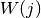
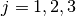
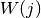
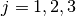
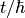
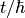

This tab creates a group ‘normalisation’ file by taking a resolution file and fitting it to all the groups in the resolution (vanadium) data file which has the same grouping as the sample data of interest.
The routine fits the width of the resolution file to give a ‘stretch factor’ and the area provides an intensity normalisation factor.
The fitted parameters are in the group workspace with suffix _ResNorm with additional suffices of _Intensity & _Stretch.
The processing on this tab is provided by the ResNorm algorithm.
 file.
file.Warning
This interface is only available on Windows

The model that is being fitted is that of a  -function (elastic component)
of amplitude
-function (elastic component)
of amplitude  and Lorentzians of amplitude
and Lorentzians of amplitude  and HWHM
 where . The whole function is then convolved with
the resolution function. The -function and Lorentzians are intrinsically
normalised to unity so that the amplitudes represent their integrated areas.
and HWHM
 where . The whole function is then convolved with
the resolution function. The -function and Lorentzians are intrinsically
normalised to unity so that the amplitudes represent their integrated areas.
For a Lorentzian, the Fourier transform does the conversion:
![1/(x^{2}+\delta^{2}) \Leftrightarrow exp[-2\pi(\delta k)]](../_images/math/8cfe2d45d1b9de22f5e1b9f503b4a0353b75086f.png) . If
. If  is identified with energy
is identified with energy  and
and  with 
where t is time then:
with 
where t is time then: ![1/[E^{2}+(\hbar / \tau)^{2}] \Leftrightarrow exp[−t
/\tau]](../_images/math/180bb3d4794ca04a87d1544bcc0ddf9599ab2b0b.png) and
and  is identified with
is identified with  . The program
estimates the quasielastic components of each of the groups of spectra and
requires the resolution file and optionally the normalisation file created by
ResNorm.
. The program
estimates the quasielastic components of each of the groups of spectra and
requires the resolution file and optionally the normalisation file created by
ResNorm.
For a Stretched Exponential, the choice of several Lorentzians is replaced with
a single function with the shape : ![\psi\beta(x) \Leftrightarrow
exp[-2\pi(\sigma k)\beta]](../_images/math/562df13e2b1e11259eb24219de06c1562093dbaf.png) . This, in the energy to time FT transformation, is
. This, in the energy to time FT transformation, is
![\psi\beta(E) \Leftrightarrow exp[-(t/\tau)\beta]](../_images/math/a107edd8fafd9951836b41fc46f0bfdd89b363db.png) . So is
identified with
. So is
identified with  . The model that is fitted is
that of an elastic component and the stretched exponential and the program gives
the best estimate for the
. The model that is fitted is
that of an elastic component and the stretched exponential and the program gives
the best estimate for the  parameter and the width for each group
of spectra.
parameter and the width for each group
of spectra.
file.Warning
This interface is only available on Windows
This is a variation of the stretched exponential option of Quasi. For each spectrum a fit is performed for a grid of β and σ values. The distribution of goodness of fit values is plotted.
file.Categories: Interfaces | Indirect

{kind=link}